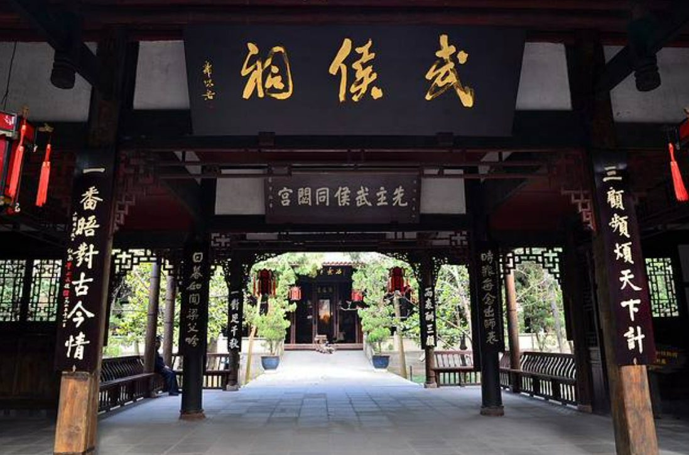
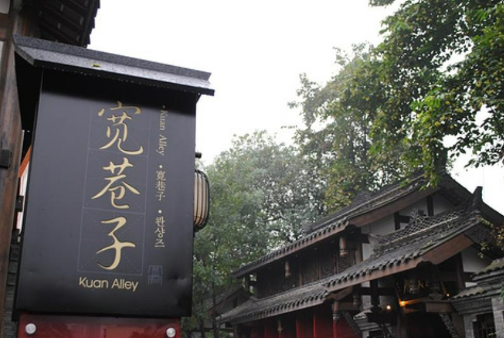
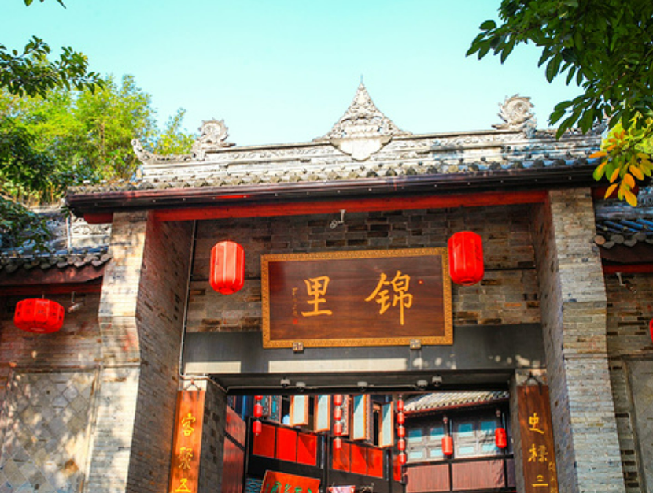

首页
美食
景点
民俗
春熙路
春熙路是一个充满活力和魅力的商业街，融合了现代与传统，是游客和购物爱好者的绝佳选择。无论是购物、美食还是文化体验，春熙路都能给予你丰富多样的享受

宽窄巷
宽窄巷子保留了古老成都的风貌，其建筑风格融合了传统的四川民居与现代文化元素，呈现出独特的韵味。这里有许多传统的四合院、青砖灰瓦的老房子，街道两旁则是众多特色小吃、手工艺品店、茶馆和文化艺术馆等。

锦里
成都锦里是一个集历史、文化、美食和购物为一体的旅游胜地，是了解成都传统文化和体验当地生活的好去处。无论是游览古街、品尝美食还是购买纪念品，锦里都能给你带来丰富多彩的体验。

邂逅成都